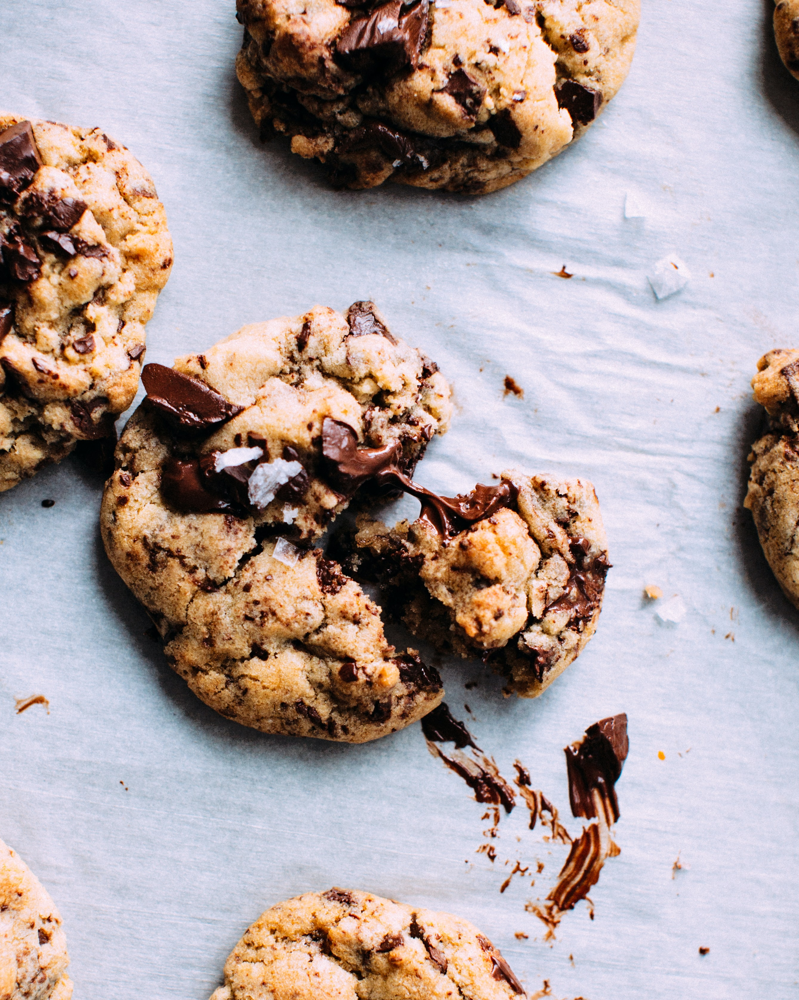

Skip to Content
Go Back to Main page
Chocolate Chip Cookie Recipe

Description
Who doesn't like a fresh dish of pure joy! Chocolate chip cookies are an
all time classic! In this recipe, you will learn how to make them yourself
in an easy to follow guide!
Ingredients
- 2 sticks of butter
- Vanilla Extract
- Flour
- Chocolate Chips
- Sugar (a mix of brown and white)
- 2 eggs
- Baking Soda
- Water
- Salt
Steps
- Preheat oven to 350 degrees.
-
beat eggs, butter, a teaspoon of vanilla, a pintch of sault and 2
tablespoons of the sugars.
-
Mix a small bowl of water with baking soda and add to the mixture.
- Add a bit of flour and Chocolate chips.
- Mix until it's a thick dough and mold into small balls.
-
Place each dough ball onto a baking sheet for 10 minutes in the oven or
until golden brown.
Enjoy!